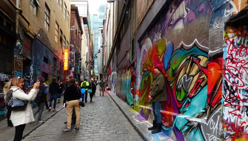
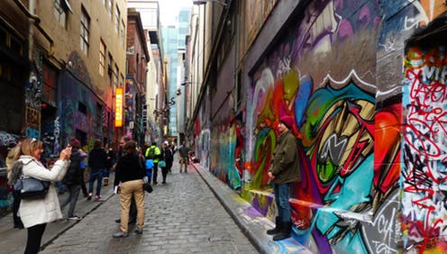
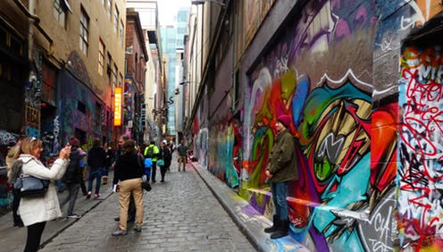
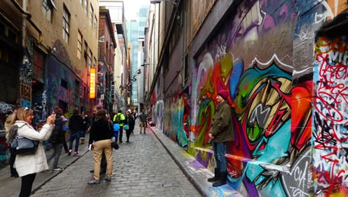

Back in the 1920s Hosier lane was within the clothing manufacturing district of the city. At the time Hosier lane was home to a warehouse for a men’s clothing company, a costume manufacturer and an organ manufacturer.
Today, it's been approved by Melbourne City council as a place where street artists can showcase their talent and expressions.

Hosier lane has become a must see tourist destination, providing a memorable experience of walking through the iconic bluestone laneway while being taken an array of directions by some of the world most impressive art.